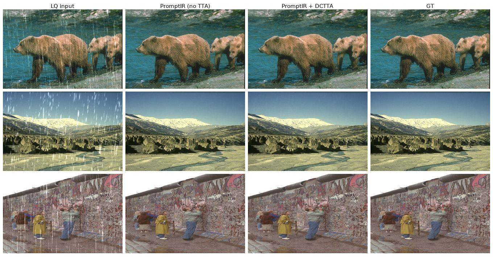
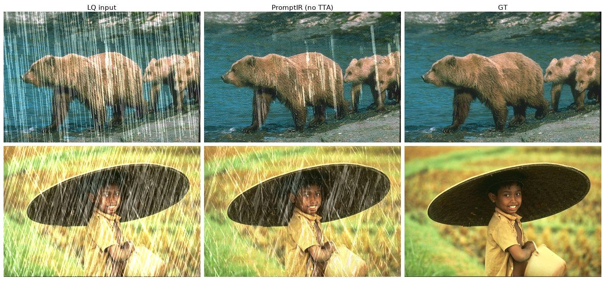

INFERENCE WALKTHROUGH / NOT A REPRODUCTION
先把数据对上，
再谈 TTA 增益。
用作者发布的 3-task PromptIR 检查点，先跑仓库自带的 Rain100H：no-TTA 15.550 / 0.4868，与论文 Table 1 的 PromptIR 15.64 对得上，但这份数据的输入对 GT 只有 12.13 dB，退化极重。换到论文真正使用的 Rain100L 后 no-TTA 回到 37.440 / 0.9786；TTA 在小样本（15 / 10 张）上分别只有 +0.09 dB 与 −0.11 dB。论文的 +4.57 dB 来自「未见退化 + 全目标域一次性适配」，本走查两个条件都没满足。
跑了什么
两条链路：test_promptir.py（no-TTA 前向，100 张全量）与 train_test_promptir.py（TTA：8 增广伪标签 → RDDM 再退化 → 一致性损失 → EMA 教师 → Fisher/TIPS）。数据先跑仓库自带的 testdata/Rain100H（100 对），再按论文设定换 Rain100L（Restormer 测试包，100 对）重跑；TTA 因每张都要训残差扩散，只做了 15 张（Rain100H）与 10 张（Rain100L）子集。
额外做了两项诊断：输入 LQ 对 GT 的逐图 PSNR（判断数据退化程度），以及把干净 GT 直接喂模型（identity 检查，排除权重未加载）。
环境与改动
python 3.10.19、torch 2.1.2+cu121、torchvision 0.16.2+cu121。额外装 lightning 2.6.5、timm 1.0.27、mmcv 2.1.0（net/model.py 顶层 import 了 modulated_deform_conv2d）、OpenAI CLIP（同文件也 import clip）、lpips、scikit-image/video、einops、accelerate、ema-pytorch、Augmentor。踩坑：numpy 2.x 会让 torch 报 Failed to initialize NumPy，回 1.26.4。
权重 pretrain/model.ckpt 是 3-task PromptIR（407 MB，Google Drive 1pTDAtMMPIdsGIAvQc0nr5tJs8qOYIpZ4），strict=False 加载时 missing=0 / unexpected=0。
代码改动（跑通必需，不动算法）：删除两个脚本里硬编码的 CUDA_VISIBLE_DEVICES="4"（会覆盖外层指定卡）；lq_dir/gt_dir/output_path 改成本地路径；utils/loss_utils.py 的 WaveletTransform.params_path 从 /data2/tn/... 改为 ./pretrain/wavelet.mat；Rain100L 重跑时把路径换成 data/rain100l/{LQ,GT} 与 sub10 子集。
结果
| 设定 | 图像数 | PSNR / SSIM | 说明 |
|---|---|---|---|
| Rain100H · 输入 LQ vs GT | 100 | 12.13 dB | 退化极重，远低于论文常规 derain 量级 |
| Rain100H · PromptIR no-TTA | 100 | 15.550 / 0.4868 | 与论文 Table 1 的 15.64 基本一致 |
| Rain100H · PromptIR + DCTTA | 15 | 16.117 / 0.4679 | 同 15 张 no-TTA 基线 16.029 → +0.09 dB |
| Rain100L · PromptIR no-TTA | 100 | 37.440 / 0.9786 | 回到正常 derain 水平 |
| Rain100L · PromptIR + DCTTA | 10 | 37.846 / 0.9774（日志） | 逐图复算 TTA 37.724 vs no-TTA 37.832 → −0.11 dB |
逐图 PSNR(输入) 与 PSNR(输出) 的相关系数是 0.94：输入 7 dB 的图输出也只有 7 dB，输入 20 dB 的图能到 31 dB，说明模型本身在工作，但那份 Rain100H 数据的退化分布严重偏向极端样本。identity 检查（干净 GT 直接喂模型）norain-76 得 53.98 dB、norain-1 得 27.67 dB，排除权重未加载。
因此 Rain100H 的 15.55 不能当作「复现失败」：论文 Table 1 的 PromptIR Rain100H 就是 15.64，这一行对上了；论文的 20.21 是 DCTTA 在整个目标域上做一次性适配（RDDM 与 Fisher 都见全 test 集），本走查只给 15 / 10 张，适配信号远不够——这是协议差异，不是可直接比较的数字。
样例


没跑的部分与局限
- TTA 样本量太小：15 / 10 张，RDDM 与 Fisher 统计都不充分，不能据此判断 DCTTA 的方法有效性。
- 没跑全目标域适配：论文的 32.25 s 一次性适配是在完整 test 集上；本走查没有在 100 张上跑完整 TTA（时间与显存 23.5 GB 峰值）。
- 只测 deraining：去噪（Kodak24+Poisson）、去雾（O-HAZY/DenseHaze）、去模糊、低光、混合退化都没跑。
- 没有感知指标：只算 PSNR/SSIM，没有 LPIPS 或下游任务；论文本身也只有这两项。
- 数据来源：Rain100L 取自 Restormer 的 deraining 测试包；Rain100H 用仓库自带版本（与论文的 Rain100H 是否为同一份未核对）。
文件位置
| 路径 | 内容 |
|---|---|
/data1/kxchen/infer-repro/dctta | 代码（官方 @ 0526bf7）+ env/ + 数据/权重 |
code/out/Rain100H_PromptIR/ | no-TTA 输出（Rain100H 的 norain-*.png + Rain100L 的 1..100.png） |
code/out/Rain100H_DCTTA/ | TTA 输出（15 张 Rain100H + 10 张 Rain100L） |
data/rain100l/{LQ,GT}, data/rain100l/sub10 | Rain100L 全量与 10 张子集 |
logs/test_promptir.log, logs/test_rain100l.log, logs/tta_run.log, logs/tta_l_sub10.log | 四组评测日志 |
RECORD.md | 完整记录与坑位 |
来源
- DCTTA 论文（CVPR 2026，CVF Open Access）与官方仓库。
- 数据：Restormer deraining 测试包（Google Drive
1P_-RAvltEoEhfT-9GrWRdpEi6NSswTs8）。 - 本页数字来自服务器端日志与保存的 png 复算；
RECORD.md是原始记录。全部为小样本推理走查，不等同论文指标。